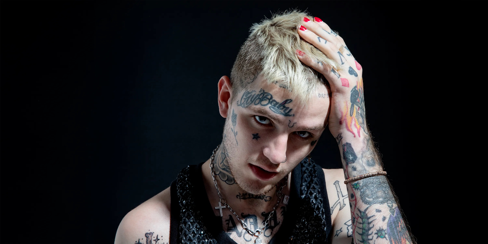

Gustav Elijah Åhr, known professionally as Lil Peep, was a groundbreaking artist who pioneered the emo-rap movement by blending elements of alternative rock, emo, and hip-hop into a distinctive sound that resonated with a generation dealing with mental health struggles and existential anxiety.
Lil Peep began his career on SoundCloud in 2015, gaining attention with projects like Lil Peep Part One and Live Forever. His unique sound and aesthetic quickly attracted a dedicated following, with songs like "Star Shopping" and "BeamerBoy" becoming underground hits. His mixtape Crybaby (2016) and EP Hellboy (2016) further established his distinctive blend of emo, punk, and trap influences, laying the groundwork for his debut album Come Over When You're Sober, Pt. 1 (2017).
Lil Peep's music was characterized by its raw emotional honesty, with lyrics that candidly addressed depression, drug use, heartbreak, and existential angst. His ability to blend gothic aesthetics with trap production and emo vocal stylings created a distinctive sound that helped define the emo-rap genre. His fashion sense, featuring dyed hair, face tattoos, and vintage clothing, also influenced a generation of artists. Though his career was tragically cut short, Peep's impact on music has been profound, inspiring countless artists to embrace vulnerability and genre-blending in their work.
For Newcomers: "Star Shopping," "Awful Things," "Benz Truck," "Save That Shit"
For The Dive: "Witchblades," "Gym Class," "Hellboy," "Life is Beautiful"
Hidden Gems: "Belgium," "haunt u," "Moving On," "The Way I See Things"
Despite his tragically short career, Lil Peep's influence on music cannot be overstated. He helped legitimize emotional vulnerability in hip-hop, paving the way for a wave of artists exploring similar themes. His blend of alternative rock samples with trap beats has become a blueprint for a generation of SoundCloud rappers. After his death, Peep has achieved even wider recognition, with his music continuing to find new audiences and his artistic vision being celebrated in the documentary Everybody's Everything. In just a few years of creating music, Lil Peep managed to leave an indelible mark on modern music, with his legacy living on through both his catalog and the countless artists he's inspired.
| Title | Year | Billboard Hot 100(US) | UK Singles Chart(UK) | Spotify Streams (Millions) |
|---|---|---|---|---|
| "Awful Things" (feat. Lil Tracy) | 2017 | 79 | 67 | 370+ |
| "Falling Down" (with XXXTENTACION) | 2018 | 13 | 9 | 500+ |
| "Save That Shit" | 2017 | - | 89 | 450+ |
| "Star Shopping" | 2015/2019 | - | 91 | 500+ |
| "Life is Beautiful" | 2019 | - | - | 200+ |
| Album | Certification (US) | Peak Chart Position (US) |
|---|---|---|
| Come Over When You're Sober, Pt. 1 | Gold | 38 |
| Come Over When You're Sober, Pt. 2 | Gold | 4 |
| Everybody's Everything | - | 49 |
| Hellboy (Mixtape) | - | 8 (Billboard Hip-Hop/R&B) |
| Crybaby (Mixtape) | - | 16 (Billboard Hip-Hop/R&B) |